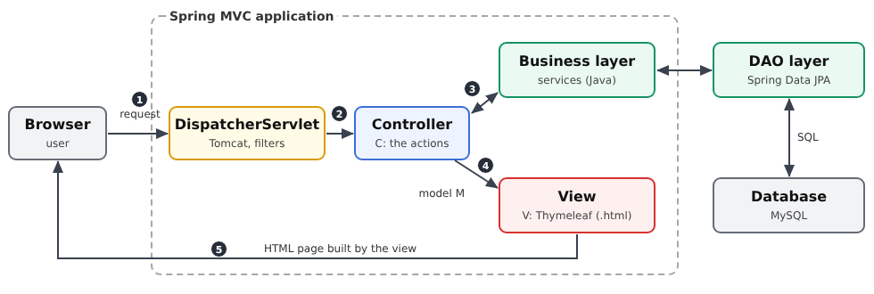

1. Einführung
Das PDF des Dokuments finden Sie |HIER|.
Den Code des Dokuments finden Sie |HIER|.
Dieses Dokument ist ein Produkt der KI Claude von Anthropic. Es knüpft an das Dokument „Schritt-für-Schritt-Einführung in das Web-Framework [ASP.NET Core MVC]“ (2026) an, das seinerseits auf das Dokument „Schritt-für-Schritt-Einführung in das Web-Framework [NestJS]“ (2026) folgte. Dieses Dokument überträgt den Kurs [ASP.NET Core MVC] auf die [Java]-Umgebung:
- das Framework [ASP.NET Core MVC] und die Sprache [C#] werden durch das Framework [Spring MVC] nebst [Spring Boot] 4 und die Sprache [Java] 21 ersetzt;
- die [Razor]-Views werden durch [Thymeleaf]-Views ersetzt;
- der ORM [Entity Framework Core] wird ersetzt durch [Spring Data JPA] und den ORM [Hibernate], weiterhin auf Basis von [MySQL].
Das Dokument folgt eng dem Aufbau des Kurses [ASP.NET Core MVC]: zunächst zahlreiche kleine Projekte, die sich jeweils auf ein einzelnes Konzept konzentrieren, danach eine umfassende Fallstudie – eine Webanwendung zur Terminverwaltung einer Arztpraxis – mit vollständig kommentierten Dateien. Die Beispiele haben dieselben Nummern und behandeln dieselben Themen wie im Kurs [ASP.NET Core MVC]: Wer diesen Kurs kennt, kann die beiden Frameworks Beispiel für Beispiel vergleichen. Das ist jedoch nicht erforderlich: Dieses Dokument ist in sich abgeschlossen und setzt weder Kenntnisse von [ASP.NET] noch, was das betrifft, von [Spring] voraus. Die einzigen Voraussetzungen sind ein grundlegendes Verständnis der Webprogrammierung (das HTTP-Protokoll, die Sprache HTML) und die Sprache [Java].
1.1. Die Rolle von Spring MVC in einer Webanwendung
Eine Webanwendung wird oft in Schichten aufgebaut, wobei jede Schicht nur mit ihren Nachbarschichten kommuniziert:

- Die Web-Schicht empfängt die HTTP-Anfragen des Browsers und liefert ihm HTML-Seiten zurück. [Spring MVC] hilft uns beim Schreiben dieser Schicht;
- die Geschäftsschicht enthält die Geschäftsregeln der Anwendung (z. B. „ein Patient darf nur einen bevorstehenden Termin haben“). Sie weiß nichts vom Web: Sie könnte genauso gut eine Kommandozeilenanwendung bedienen;
- die Datenzugriffsschicht ([DAO]-Schicht, für [Data Access Object]) liest aus der Datenbank und schreibt in sie. Wir verwenden [Spring Data JPA], das auf dem ORM [Hibernate] ([Object Relational Mapper]) beruht, um die Zeilen der Tabellen und die Objekte in [Java] aufeinander abzubilden.
Die Web-Schicht selbst folgt dem [MVC] -([Model – View – Controller])-Modell:
- der Controller (C) ist eine Klasse, deren Methoden, Actions genannt, jeweils eine bestimmte Art von Anfrage behandeln (zum Beispiel [GET /schedule]). Eine Action liest die Anfrageparameter, ruft die Geschäftsschicht auf und wählt dann die anzuzeigende View aus;
- das Modell (M) ist die Menge der Daten, die die Action an die View übergibt;
- die View (V) ist eine Datei vom Typ [Thymeleaf] (mit der Endung [.html]): eine HTML-Seite, in der bestimmte Tags Attribute [th:...] ([th:text], [th:each] ...) tragen, die die [Thymeleaf]-Engine durch Daten aus dem Modell ersetzt.
Die Verarbeitung einer Anfrage folgt den nummerierten Schritten im Diagramm:
- 1: Der Browser sendet eine HTTP-Anfrage, zum Beispiel [GET /schedule?doctorId=1&day=2026-09-24];
- 2: Der Webserver [Tomcat], der von [Spring Boot] in die Anwendung eingebettet wird, empfängt die Anfrage. Sie durchläuft eine Reihe von Filtern (Lesen von Cookies, Authentifizierung usw.) und erreicht dann den [DispatcherServlet], den zentralen Einstiegspunkt von [Spring MVC], der die Action auswählt, die für diese Anfrage zuständig ist: Das ist das Routing. Bevor die Anfrage die Action erreicht, kann sie noch Interceptors durchlaufen, die wir in späteren Kapiteln behandeln;
- 3: Die Action fordert die benötigten Daten von der Geschäftsschicht an; falls nötig, wendet sich die Geschäftsschicht an die [DAO]-Schicht, die die Datenbank [MySQL] in SQL abfragt;
- 4: Die Action erstellt das View-Modell M und bestimmt die View, die es anzeigen soll;
- 5: Die View-Engine [Thymeleaf] erzeugt das HTML der Seite, die [Spring MVC] an den Browser zurückgibt.
[Spring] ist das weltweit am häufigsten eingesetzte Framework ([Java]) für die Entwicklung von Unternehmensanwendungen. Es ist frei und quelloffen und funktioniert überall dort, wo [Java] ([Windows], [Linux], [macOS]) läuft. [Spring MVC] ist die Web-Komponente; [Spring Boot] ist eine zusätzliche Schicht, die anhand der im Projekt vorhandenen Bibliotheken die gesamte Umgebung automatisch konfiguriert (Webserver, JSON-Konvertierung, View-Engine, Datenzugriff usw.) und die Anwendung in ein gewöhnliches [Java]-Programm verwandelt, das über eine [main]-Methode gestartet wird. [Spring MVC] kann Server erstellen, die JSON an einen [JavaScript]-Client ([Angular], [React], [Flutter] ...) liefern, ebenso wie klassische Webanwendungen, bei denen der Server die HTML-Seiten erzeugt und der Browser sie lediglich anzeigt. Dieses Dokument konzentriert sich auf den zweiten Anwendungsfall. Wie [ASP.NET Core] [Spring] beruht es auf zwei Ideen: Annotationen ([@GetMapping], [@RequestMapping], [@PreAuthorize] ...) beschreiben die Rollen von Klassen und Methoden, und die Dependency Injection versorgt jedes Objekt mit den Abhängigkeiten, die es benötigt. [Spring] ist tatsächlich eines der Frameworks, die diese zweite Idee bekannt gemacht haben.
1.2. Verwendete Werkzeuge
Die Beispiele wurden mit den folgenden Werkzeugen geschrieben und getestet (ihre Installation wird im Anhang beschrieben):
- [JDK] 21 ([Java Development Kit]), das den Compiler [javac] und die virtuelle Maschine [java] enthält. [Java] 21 ist eine LTS-Version (Long-Term Support);
- das Build-Werkzeug [Maven] 3.9.11, das nicht installiert werden muss: Jedes Projekt enthält einen Maven Wrapper (die Skripte [mvnw] und [mvnw.cmd]), der bei der ersten Verwendung automatisch die passende Version von [Maven] herunterlädt;
- der Editor [Visual Studio Code] mit den Erweiterungen [Extension Pack for Java] und [Spring Boot Extension Pack] ;
- ein aktueller Browser ([Chrome], [Firefox], [Edge]);
- das Kommandozeilenwerkzeug [curl], das die rohen HTTP-Antworten anzeigt (es ist in [Windows] 10 und 11 enthalten);
- das DBMS [MySQL] (oder [MariaDB]), zum Beispiel das von [Laragon] unter [Windows], ab dem Kapitel zum Datenzugriff und für die Fallstudie.
Anders als das SDK und [.NET], die [ASP.NET Core] enthalten, [JDK] enthält das JDK kein [Spring]: Das Framework ist eine Sammlung von Bibliotheken, die [Maven] bei der ersten Kompilierung aus dem zentralen Repository [Maven Central] herunterlädt (an diesem Tag muss also eine Internetverbindung bestehen) und dann in einem lokalen Ordner ablegt ([.m2] im Home-Verzeichnis des Benutzers). Diese Bibliotheken sind in Startern zusammengefasst: Ein Starter ist eine einzelne Abhängigkeit, die alles liefert, was für eine bestimmte Funktion nötig ist. Alle Beispiele verwenden [spring-boot-starter-webmvc] ([Spring MVC] und den Server [Tomcat]); hinzu kommen [spring-boot-starter-validation] (Datenvalidierung, ab Kapitel 3), [spring-boot-starter-thymeleaf] (Views, ab Kapitel 4), [spring-boot-starter-security-oauth2-resource-server] ([Spring Security] und die JWT-Token, in Kapitel 8), [spring-boot-starter-data-jpa] und der Treiber [mysql-connector-j] (Datenbankzugriff, in Kapitel 9). Die verwendeten Versionen sind die von [Spring Boot] 4.1.1: [Spring Framework] 7.0.9, [Spring Security] 7.1.1, [Hibernate] 7.4.5, [Thymeleaf] 3.1.5, [Jackson] 3 (JSON-Konvertierung) und [Tomcat] 11.
1.3. Die Fallstudie ausführen
Anmerkung des Prüfers: Ich empfehle dem Leser, die Fallstudie sofort wie unten beschrieben auszuführen. Wenn Sie die Rolle dieser Terminverwaltungsanwendung vollständig verstanden haben, bitten Sie Ihre Lieblings-KI, die Anwendung wie folgt zu ändern: Ab sofort kann jeder Arzt:
- seine eigenen Terminfenster zwischen zwei Daten festlegen. So kann er seinen Terminkalender nach Bedarf anpassen;
- bestimmte Zeitfenster für einen bestimmten Tag aus dem Kalender entfernen – zum Beispiel, wenn er aus privaten Gründen nicht verfügbar ist;
Die Änderung ist nicht trivial, da sie eine Änderung der Datenbankstruktur erfordert. Bitten Sie die KI, Ihnen den neuen Anwendungscode und das SQL-Skript zur Erstellung der neuen Datenbank zu liefern. Dazu müssen Sie ihr die ZIP-Datei mit dem vollständigen Projekt sowie das SQL-Skript der alten Datenbank übergeben.
Außerdem habe ich den von Claude erstellten Kurs nicht geprüft. Er hatte bereits zwei perfekte Kurse erstellt: [NestJS] und [ASP.NET Core MVC]. Ich bin davon ausgegangen, dass das auch hier der Fall ist. Wenn Sie beim Verständnis auf ein Problem stoßen, ist die Lösung immer dieselbe: Bitten Sie Ihre Lieblings-KI, Ihnen zu erklären, was Sie nicht verstehen. Claude ist zum Beispiel sehr gut darin. Möglicherweise müssen Sie ihm das Beispiel, das Sie nicht verstehen, „hochladen“.
Ende der Anmerkung.
Die Fallstudie am Ende dieses Dokuments ist eine vollständige Anwendung. Leser werden sie wahrscheinlich in Aktion sehen wollen, bevor sie sich in die Details des Frameworks vertiefen: Hier steht, wie man sie ausführt. Sie befindet sich im Ordner [rdvmedecins2-spring-mvc], neben dem Ordner [examples]:
Sie müssen [JDK] 21, [Visual Studio Code] und [MySQL] installiert haben (siehe Anhänge). [Maven] muss nicht installiert werden. Anschließend:
- Legen Sie die Datenbank [dbrdvmedecins2] an, indem Sie das Skript [rdvmedecins2-spring-mvc/database/dbrdvmedecins2.sql] ausführen. Öffnen Sie mit [Laragon] das Werkzeug [HeidiSQL] (Schaltfläche „Datenbank“) und führen Sie das Skript dann über das Menü Datei / SQL-Datei ausführen aus. In der Kommandozeile, aus dem Ordner [rdvmedecins2-spring-mvc]:
- Prüfen Sie die Verbindung zur Datenbank. Die Anwendung verbindet sich mit [MySQL] auf [localhost], Port 3306, mit dem Benutzer [root] ohne Passwort (die Standardeinstellungen von [Laragon]). Wenn Ihr Konto [root] ein Passwort hat, tragen Sie es in der Datei [src/main/resources/application.properties] der Anwendung in der Zeile [spring.datasource.password=] ein (zum Beispiel [spring.datasource.password=myPassword]). Um zu vermeiden, dass ein Passwort in eine Projektdatei geschrieben wird, können Sie es auch in der Umgebungsvariablen [SPRING_DATASOURCE_PASSWORD] angeben, die Vorrang vor der Datei hat: [set SPRING_DATASOURCE_PASSWORD=myPassword] unter [Windows] (Eingabeaufforderung), [export SPRING_DATASOURCE_PASSWORD=myPassword] unter [Linux] und [macOS];
- öffnen Sie den Ordner [rdvmedecins2-spring-mvc] in [Visual Studio Code] (Menü Datei / Ordner öffnen) und öffnen Sie dann ein Terminal (Menü Terminal / Neues Terminal);
- starten Sie die Anwendung unter [Linux] und [macOS]:
und unter [Windows]:
- Beim ersten Start lädt der Maven Wrapper [Maven] herunter, danach lädt [Maven] die Bibliotheken der Anwendung herunter, was einige Minuten dauert. Anschließend wird die Anwendung kompiliert und gestartet. Die Konsole zeigt das [Spring Boot]-Banner, gefolgt von den Startmeldungen (hier sind nur die wichtigsten wiedergegeben):
Jede Zeile beginnt mit Datum und Uhrzeit (hier ersetzt durch [...]), gefolgt von der Meldungsstufe ([INFO], [WARN], [ERROR]), der Prozessnummer und dem Thread-Namen (ebenfalls ersetzt durch [...]) und schließlich dem abgekürzten Namen der Klasse, die die Meldung schreibt. Sie zeigt, dass die Anwendung im Profil [dev] läuft (eine Gruppe von Entwicklungseinstellungen, die unter anderem SQL-Anfragen anzeigt), dass der Server [Tomcat] auf Port 8081 lauscht, dass die Verbindung zur Datenbank erfolgreich hergestellt wurde (der Verbindungs-„Pool“ [HikariCP] ist bereit) und dass die Anwendung bereits die Liste der Ärzte und Klienten gelesen hat (die beiden SQL-Anfragen). Zusammen mit [MariaDB] gibt [Hibernate] außerdem eine Warnung [HHH000511] aus, die ohne Folgen bleibt;
- Öffnen Sie die URL [http://localhost:8081] in einem Browser:

- Melden Sie sich mit einem der Demo-Konten an, deren Passwort dem Benutzernamen entspricht: [admin] (Administrator), [pelissier], [tatou], [dupont] (Ärzte), [martin], [durand], [bistrou], [german] (Patienten). Außerdem müssen Sie die Zeichen aus dem Bild eingeben, in Groß- oder Kleinschreibung.
Beim Start der Anwendung wird die Datenbank gelesen: Ist [MySQL] nicht erreichbar, bricht sie sofort ab, und die Konsole zeigt den Grund an. Lautet die Meldung [Communications link failure] (oder [Connection refused]), ist [MySQL] nicht gestartet; bei [Access denied for user 'root'@'localhost'] ist das Passwort falsch; bei [Unknown database 'dbrdvmedecins2'] wurde das SQL-Skript nicht ausgeführt; bei [Port 8081 was already in use] wird Port 8081 bereits verwendet (zum Beispiel von der [ASP.NET Core] -Version der Anwendung); bei [release version 21 not supported] (oder [invalid target release: 21]) ist das installierte [JDK] älter als Version 21. Die Datei [README.md] der Anwendung beschreibt weitere Fälle. Beenden Sie die Anwendung mit [Ctrl-C] im Terminal.
Das letzte Kapitel des Dokuments erklärt, wie die Anwendung benutzt wird, und behandelt dann jede ihrer Dateien.
1.4. Beispiele
Die Beispiele liegen im Ordner [examples], mit einem Unterordner pro Beispiel:
Jedes Beispiel ist ein [Maven] -Projekt, das für sich kompiliert und ausgeführt werden kann. Ein [Maven]-Projekt wird durch eine Datei [pom.xml] ([Project Object Model]) beschrieben: seine Identität, die Bibliotheken, von denen es abhängt (seine Abhängigkeiten), und wie es erstellt wird. Die 28 Projekte sind Module eines übergeordneten Projekts, das in der Datei [examples/pom.xml] beschrieben ist. Die Skripte [mvnw] ([Linux], [macOS]) und [mvnw.cmd] ([Windows]) bilden den Maven Wrapper; die Datei [.mvn/wrapper/maven-wrapper.properties] legt fest, welche Version von [Maven] er herunterladen muss (3.9.11).
Der Ordner [common/bootstrap] enthält das CSS-Framework [Bootstrap], das von den Beispielen gemeinsam genutzt wird, die ihre Seiten formatieren (ab Beispiel 15).
Jedes Beispiel hat die übliche Struktur eines [Maven]-Projekts:
- [src/main/java]: der [Java]-Code, gegliedert in Pakete (die Ordner [example13], [example13/controllers] ...). Ein Paket in [Java] entspricht einem Namespace in [C#]; der Name eines Pakets spiegelt den Pfad seines Ordners wider ([example13.controllers]);
- [Example13Application.java]: die Startklasse der Anwendung, die die Methode [main] enthält (siehe Beispiel 01);
- [controllers]: die Controller;
- [models]: die Klassen, die die Modelle beschreiben (der Actions und der Views);
- [src/main/resources]: Dateien, die nicht zum [Java]-Code gehören;
- [templates]: die [Thymeleaf] -Views (ab Kapitel 4);
- [application.properties]: die Konfiguration der Anwendung (Listening-Port und später Datenbankverbindung usw.);
- [pom.xml]: die Projektdatei, die beschreibt, wie die Anwendung erstellt wird.
Bei der Kompilierung erstellt [Maven] in jedem Beispiel einen Ordner namens [target], in dem es die kompilierten Klassen ablegt; dieser Ordner kann bedenkenlos gelöscht werden.
Um ein Beispiel auszuführen, öffnen Sie ein Terminal im Beispielordner (in [Visual Studio Code]: Rechtsklick auf den Beispielordner, dann „Im integrierten Terminal öffnen“ wählen) und geben Sie unter [Linux] und [macOS]Folgendes ein:
und unter [Windows]:
Der Maven Wrapper befindet sich im Ordner [examples], dem übergeordneten Ordner des Beispielordners: daher [../] (oder [..\]). Der Befehl [spring-boot:run] kompiliert das Beispiel (in seinem Ordner [target]) und startet dann die Anwendung. Alle Beispiele lauschen auf Port 5000: Es kann also nur eines gleichzeitig laufen. Beenden Sie den Server mit [Ctrl-C] im Terminal. Sie können auch alle Beispiele auf einmal aus dem Ordner [examples] kompilieren, um zu prüfen, ob die Installation vollständig ist:
([mvnw compile] unter [Windows]).
Wenn Sie den Ordner [examples] in [Visual Studio Code] öffnen, findet die Erweiterung [Extension Pack for Java] die übergeordnete Datei [pom.xml] und importiert alle Module (sie erscheinen im Bereich „Java Projects“): Sie haben dann Syntaxhervorhebung, Code-Vervollständigung und Fehlermeldungen in jeder Datei. Mit ihren Standardeinstellungen kompiliert sie außerdem jede [.java]-Datei, sobald Sie sie speichern. Die Erweiterung [Spring Boot Extension Pack] fügt einen Bereich „Spring Boot Dashboard“ hinzu, der die gefundenen Anwendungen auflistet und es erlaubt, sie ohne Terminal zu starten oder zu beenden (das genaue Aussehen dieser Bereiche hängt von der Version der Erweiterungen ab). Schließlich hängen alle Beispiele von [Spring Boot DevTools] ab (siehe unten): Eine laufende Anwendung startet automatisch neu – innerhalb von ein bis zwei Sekunden –, sobald eine ihrer Klassen neu kompiliert wird. Mit [Visual Studio Code] genügt es also im Prinzip, eine geänderte Datei zu speichern, damit die Anwendung sie berücksichtigt.
Die Datei [pom.xml] des übergeordneten Projekts [examples/pom.xml]:
Kommentieren wir diese Datei:
- Zeilen 14–19: Das übergeordnete Projekt erbt selbst von einem Elternprojekt, [spring-boot-starter-parent], Version 4.1.1. Dieses Projekt legt die Versionen aller Bibliotheken von [Spring] und der von ihnen verwendeten Bibliotheken fest, die so gewählt sind, dass sie zusammenarbeiten: Deshalb gibt später keine Abhängigkeit eine Version an. Es steuert außerdem die Kompilierung (UTF-8-Kodierung des Quellcodes, Version von [Java] ...). Das leere Element [<relativePath/>] zeigt an, dass dieses Elternprojekt kein benachbarter Ordner ist, sondern in den [Maven]-Repositories gesucht werden muss;
- Zeilen 22–24: die Identität des Projekts: eine Gruppe ([groupId]), ein Name ([artifactId]) und eine Version. Die Module verwenden diese Identität, um auf ihr Elternprojekt zu verweisen;
- Zeile 26: Ein Projekt vom Typ [pom] erzeugt weder Klassen noch Archive; es fasst Module zusammen und gibt seine Einstellungen an sie weiter;
- Zeilen 28–31: die Zielversion von [Java]: [Java] 21;
- Zeilen 34–63: die Module, eines nach dem anderen; angegeben ist jeweils der Name ihres Ordners. Ein [Maven]-Befehl, der im Ordner [examples] ausgeführt wird, gilt für alle Module;
- Zeilen 66–78: Abhängigkeiten, die allen Beispielen gemeinsam sind und von jedem Modul geerbt werden;
- Zeilen 68–71: Der Starter [spring-boot-starter-webmvc] liefert [Spring MVC], den in die Anwendung eingebetteten Webserver [Tomcat] (es muss kein Server installiert werden) und die Bibliothek [Jackson], die [Java]-Objekte in JSON umwandelt;
- Zeilen 73–77: [Spring Boot DevTools], Entwicklungswerkzeuge: automatischer Neustart der Anwendung, wenn eine Klasse neu kompiliert wird, Deaktivierung von Caches (etwa des View-Caches) und detailliertere Fehlermeldungen. Sie dienen ausschließlich der Entwicklung: Das [Spring Boot]-Plugin (Zeilen 80–88) nimmt sie nicht in das ausführbare Archiv ([.jar]) für den Produktivbetrieb auf, und sie werden automatisch deaktiviert, wenn die Anwendung mit [java -jar] gestartet wird;
- Zeilen 80–88: das [Maven]-Plugin für [Spring Boot]. Dieses Plugin stellt den Befehl [spring-boot:run] sowie die Erstellung eines ausführbaren Archivs ([mvnw package]) bereit.
Die Datei [pom.xml] eines Beispiels ist sehr kurz. Zum Beispiel [01-structure/pom.xml]:
- Zeilen 6–10: das Elternprojekt – das Projekt [examples], identifiziert durch seine ID. Das Modul erbt dessen Abhängigkeiten und Einstellungen und über dieses auch die von [spring-boot-starter-parent];
- Zeile 11: der Name des Moduls. Gruppe und Version stammen vom Elternprojekt.
Ein Beispiel, das eine zusätzliche Bibliothek benötigt, deklariert sie in seiner eigenen Datei [pom.xml]. Zum Beispiel [13-first-view/pom.xml], das die View-Engine [Thymeleaf] verwendet:
- Zeilen 3–6: Eine Abhängigkeit wird durch ihre Gruppe und ihren Namen identifiziert; ihre Version wird von [spring-boot-starter-parent] festgelegt.
Die Datei [src/main/resources/application.properties] beginnt in allen Beispielen gleich:
- Zeile 2: der Listening-Port des Servers. Ohne diese Zeile würde [Spring Boot] auf Port 8080 lauschen; wir haben Port 5000 gewählt, den auch der Kurs [ASP.NET Core MVC] verwendet;
- Zeile 4: Wenn eine Anfrage fehlschlägt, gibt [Spring Boot] eine Fehlerantwort zurück (dazu mehr im nächsten Kapitel). Diese Einstellung stellt sicher, dass die Antwort nie den Aufrufstack enthält (die Liste der Methoden, die zum Zeitpunkt des Fehlers ausgeführt werden), der einem Angreifer Informationen über den Code der Anwendung verraten würde.
Jede Zeile hat die Form [key=value]; Zeilen, die mit [#] beginnen, sind Kommentare. Einige Beispiele fügen nach diesen beiden Zeilen eigene Schlüssel hinzu.
Schließlich finden Beispiele, die [Bootstrap] verwenden, es im Ordner [common/bootstrap] und nicht in ihrem eigenen Ordner: So existiert nur eine Kopie der Dateien. Jedes dieser Beispiele hat eine Konfigurationsklasse, die diesen Ordner unter der URL [/bootstrap/...] bereitstellt. Zum Beispiel [15-layout/src/main/java/example15/config/WebConfig.java]:
- Zeilen 8–9: eine Konfigurationsklasse für [Spring MVC] (die Beispiele 06 und 12 erklären diesen Mechanismus);
- Zeilen 14–18: Die Dateien, deren URL mit [/bootstrap/] beginnt, werden aus dem Ordner [../common/bootstrap/] ausgeliefert, relativ zum aktuellen Ordner – das heißt dem Ordner des Beispiels, wenn es wie oben beschrieben gestartet wird. Eine Seite kann so das Stylesheet [/bootstrap/css/bootstrap.min.css] verwenden. Der zweite Ordner, [common/bootstrap/], wird verwendet, wenn die Anwendung aus dem Ordner [examples] statt aus dem Beispielordner gestartet wird.
1.5. Inhalt des Dokuments
Das Dokument ist wie folgt aufgebaut:
Kapitel | Inhalt | Beispiele |
Controller, Actions und | Vom Browser zur Action: Routen, Antworten, Weiterleitungen, Services und Dependency Injection | 01–06 |
Das Action-Modell | Anfrageparameter: Binding, Konvertierung, Validierung, POST-Formulare | 07 bis 12 |
Die View und ihr Template | Thymeleaf, Template, Fragmente, Formulare, Validierung, PRG | 13 bis 21 |
Internationalisierung | Eine Anwendung in Französisch und Englisch | 22 |
Daten-Scopes | Application, Request, Session, Client | 23 |
Der Lebenszyklus einer Anfrage | Servlet-Filter, Interceptors, [@ControllerAdvice], Template-Binding, Fehlerseite | 24 |
Authentifizierung und Autorisierung | Spring Security, JWT in einem Cookie, Rollen, CAPTCHA, Begrenzung der Versuche | 25–27 |
Geschichtete Architektur | Web / Geschäftslogik / DAO mit Spring Data JPA und MySQL | 28 |
Fallstudie | Die Anwendung RdvMedecins, Datei für Datei erklärt | - |
Jedes Beispiel führt nur wenige neue Konzepte ein, und die Kapitel bauen aufeinander auf: Am besten lesen Sie sie der Reihe nach. Die Fallstudie hingegen greift auf alle Konzepte der vorangegangenen Kapitel zurück: Wo es sinnvoll ist, verweist ihr Kommentar auf das Beispiel, in dem das Konzept eingeführt wurde. Die Anhänge beschreiben die Installation der Werkzeuge: [JDK] 21, [Visual Studio Code] und seiner Erweiterungen, des Maven Wrappers, von [MySQL] mit [Laragon] und von [curl].